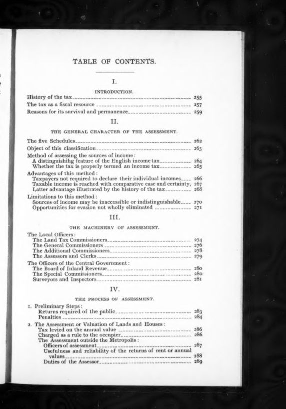

Hill, 1899: como a Inglaterra cobrava o imposto de renda
Leitura: 12 min
Joseph A. Hill descreve a máquina que lançava o imposto de renda inglês: tributação na fonte, conselhos locais, fiscais de carreira, abatimentos e a pergunta incômoda de quanta renda escapava.


Em 1853, ao apresentar seu orçamento, Gladstone contou ao Parlamento o caso de 28 pessoas cujos estabelecimentos seriam demolidos para obras públicas. Pediram 48.000 libras de indenização pelos lucros de um único ano; o júri lhes concedeu 27.000. Nas declarações ao imposto de renda dos anos anteriores, porém, os lucros somados dos 28 tinham sido de apenas 9.000 libras. Joseph A. Hill usa episódios assim para chegar à pergunta que considera o teste decisivo de qualquer imposto de renda: quanto da renda tributável escapa?
The English Income Tax ocupa o número duplo 4–5 do quarto volume dos Economic Studies, de outubro de 1899. Hill foi à Inglaterra no verão de 1897, delegado pela Comissão de Tributação de Massachusetts para estudar o funcionamento prático do imposto. Reteve o relatório para completá-lo com o estudo do material publicado e assina o prefácio em Cambridge, Massachusetts, em novembro de 1899. Diz que não discutirá a conveniência de adotar o sistema nos Estados Unidos: o tema é a administração, porque, na prática, o problema da tributação é em grande parte um problema de administração. Agradece aos funcionários do Inland Revenue, cujas informações, escreve, são provavelmente a parte mais valiosa da monografia.
Por que um imposto provisório se tornou permanente?
William Pitt recorreu a um imposto sobre a renda em 1798, e a forma moderna veio em 1803. Eram impostos de guerra, aceitos como exigência ao patriotismo durante a luta contra Napoleão e abolidos depois de Waterloo. Sir Robert Peel o reviveu em 1842 para cobrir um déficit e permitir a reforma das tarifas protecionistas. Gladstone, em 1853, planejou extingui-lo em sete anos, mas a Guerra da Crimeia obrigou-o a pedir a renovação em 1860; em 1874 voltou a oferecer a abolição e perdeu a eleição. Desde 1860 o imposto era anual e expirava se o Parlamento não o renovasse.
Essa renovação anual fez dele o regulador do orçamento: um penny a mais na libra quando faltava receita, um a menos quando sobrava. Depois de 1842 a alíquota ficou em 7 pence por libra, pouco menos de 3%; na Crimeia chegou a 16 pence; o ponto mais baixo foi 2 pence, em 1875; desde 1880 variava entre 5 e 8 pence. Duas comissões parlamentares, em 1851 e 1861, não propuseram mudanças. Hill observa que a mera sobrevivência não prova adequação e cita como exemplo contrário o sistema de impostos estaduais e locais dos Estados Unidos. Atribui o êxito à conveniência fiscal, à incidência concentrada numa minoria abastada e, sobretudo, ao método de lançamento e à competência dos funcionários.
O que significa tributar na fonte?
A renda era dividida em cinco cédulas. A cobria a propriedade de terras e casas; B, a exploração agrícola; C, os juros de títulos públicos pagos no Reino Unido; D, comércio, profissões, negócios e investimentos no exterior; E, salários e pensões de funcionários do Estado e de companhias. A alíquota era a mesma para todas; a classificação servia para adaptar o processo de lançamento a cada tipo de renda.
O princípio comum era lançar a renda onde ela nasce e cobrar por retenção. O inquilino paga o imposto do senhorio e o desconta do aluguel; o devedor o desconta dos juros; a companhia paga sobre os lucros e o acionista recebe dividendos menores. Por isso Gladstone o chamava de código de tributação, Wagner de reunião de impostos sobre rendimentos em forma de imposto de renda, e Bastable dizia que as cinco cédulas eram cinco impostos distintos. Para Hill, ainda assim, o imposto é pessoal na intenção, porque isenções e abatimentos levam em conta a renda total de cada um.
Duas vantagens decorrem do método. O contribuinte não precisa revelar sua renda total, salvo para pedir abatimento. E a renda é alcançada com facilidade e certeza. O imposto de Pitt, lançado sobre a renda líquida de cada pessoa à alíquota de 10%, rendia cerca de 5,8 milhões de libras por ano. O de 1803, com metade da alíquota, rendeu apenas um milhão a menos; em 1806, de volta aos 10%, rendeu 11,6 milhões, o dobro. Sem mudar a alíquota, chegou a 12 milhões em 1808 e passou de 14 milhões em 1814.
“As fontes são poucas e fáceis de alcançar, enquanto os beneficiários são muitos e difíceis de achar.” (the sources are few and easy to get at while the recipients are many and hard to find.)
O limite está onde fonte e destino coincidem: o lucro do comerciante, os honorários do profissional, os rendimentos de investimentos no exterior não retidos por um banqueiro. A renda do agricultor era presumida em um terço do valor locativo da fazenda. Hill estima que mais de quatro quintos do imposto eram lançados em condições que tornavam a evasão, em termos gerais, impossível.
Quem lançava o imposto?
Havia duas estruturas. A local começava nos comissários do imposto territorial, nomeados desde a lei de 1692 por leis de nomes que o Parlamento aprovava por pura formalidade, com listas preparadas pelos próprios comissários; Hill os compara a uma corporação fechada. Exigia-se renda imobiliária anual de ao menos 100 libras, ninguém era pago e talvez só um terço atuava. Deles saíam os comissários gerais, de três a catorze por distrito, proprietários abastados, vitalícios e independentes de qualquer autoridade. Os comissários gerais nomeavam comissários adicionais para a Cédula D, dois avaliadores assalariados por paróquia e um secretário, em geral advogado.
A estrutura central era a Junta da Receita Interna, em Somerset House, com presidente a 2.000 libras por ano; os comissários especiais; e, nos distritos, os surveyors, fiscais de carreira supervisionados por inspetores. Na Irlanda não havia comissários locais nem avaliadores; o lançamento cabia inteiramente a funcionários do governo.
Como se apurava o lucro de comerciantes e profissionais?
Na Cédula D, o avaliador enviava formulários e afixava um edital. Em três semanas respondia cerca de metade dos notificados; um segundo aviso trazia mais uns 15%; depois da notificação do fiscal, os faltosos caíam para perto de 20%. Todos os funcionários juravam não revelar nada das declarações. O fiscal examinava as respostas, escrevia ou recebia o contribuinte no escritório e levava os casos duvidosos aos comissários adicionais. Do açougueiro e do padeiro nem fazia questão de declaração: confiava mais na própria estimativa.
Pela lei, o fiscal só podia examinar e contestar os lançamentos dos comissários; na prática estava sempre presente às reuniões, por favor e não por direito, e suas recomendações eram em geral seguidas. A Junta desaprovava as cobranças especulativas, lançamentos inflados para forçar uma declaração, mas os comissários não lhe deviam obediência, e onde não havia declaração os lançamentos eram muitas vezes elevados. Em 1895-96 houve 503.000 lançamentos na Cédula D.
Os abatimentos tornaram o imposto progressivo?
Pela lei de finanças de 1898, rendas abaixo de 160 libras eram isentas e havia abatimentos até 700 libras: 160 libras deduzidas entre 160 e 400; 150 entre 400 e 500; 120 entre 500 e 600. Quem os pedia tinha de declarar a renda de todas as fontes, sob multa de 20 libras e imposto em triplo. Como boa parte do imposto já fora retida na fonte, era preciso devolvê-lo: mais de 300.000 pedidos por ano. Hill registra a carta ao Times de uma senhora que assinava como Elderly Spinster, para quem a ordem de pagamento de umas poucas libras tinha o encanto de um presente.
Para o autor, os abatimentos tornam o imposto progressivo até o limite em que cessam, mas um imposto lançado na fonte não se presta a uma progressão extensa. Cada ampliação obriga a apurar mais rendas individuais e a confiar mais em declarações. Que a progressão tenha avançado tanto em condições tão desfavoráveis mostraria, escreve, a força da tendência à tributação progressiva sob a democracia moderna. Com a alíquota de 8 pence, o governo, sem poder reduzir o imposto de todos, aliviava as rendas menores; e a próxima vez que pedisse mais um penny seria tentado a ampliar de novo os abatimentos.
Quem mandava de fato: o fiscal ou o conselho local?
Havia cerca de 260 surveyors, em três classes, com salários de 200 a 600 libras, admitidos por concurso como assistentes a 100 libras. Treze inspetores os visitavam duas ou três vezes por ano. Raramente ficavam mais de quatro ou cinco anos num distrito, para uniformizar práticas e evitar costumes locais; aposentavam-se aos 65 anos com metade do salário. Hill vê aí os princípios do movimento de reforma do serviço público americano e cita o presidente de Harvard, Charles W. Eliot: tributar bem exige especialistas treinados, com mandato independente e longo.
A lei desenhava um sistema descentralizado; a prática era centralizada. Os comissários resistiram a perder poderes, como em 1883, quando a Câmara rejeitou por pequena maioria a proposta de Childers de coletores do governo, e em 1887, quando Goschen retirou proposta semelhante. Mas aceitavam o manual de instruções que a Junta redigia para avaliadores que nem eram seus. Serviam de para-choque: o fiscal podia dizer ao contribuinte irritado que o lançamento não era seu, sem revelar quem eram os comissários. Hill lembra a sociedade de Spenlow e Jorkins, de Dickens.
“É feito por funcionários da Coroa, mas sujeito à revisão por conselhos locais.” (it is made by crown officers but is subject to revision by local boards)
Quanta renda escapava?
Hill propõe uma régua: um imposto que alcançasse menos de 75% da renda tributável dificilmente seria um êxito, e 85% a 90% seriam razoáveis; os impostos gerais sobre a propriedade nos Estados Unidos talvez não alcançassem 50% dos bens móveis. A parte evadível do imposto inglês era cerca de um quarto: comércio e profissões, e rendas do exterior.
A construção do Victoria Embankment, no Tâmisa, entre 1865 e 1870, revelou fraude em 80 dos 200 casos examinados: a renda real desses contribuintes superava em 130% a lançada. A Junta, em 1870, estendeu o resultado ao país e concluiu que só 66% da renda da Cédula D era alcançada. Hill contesta a extrapolação: os 80 haviam sido lançados em média a 900 libras, quando a média nacional da cédula passava pouco de 350 e só 4% dos contribuintes superavam 900. Nota que depois de 1870 os relatórios da Junta silenciaram sobre a evasão, o que pode ser prudência em qualquer cenário.
A Cédula D cresceu de 78 milhões de libras em 1869-70 para 362 milhões em 1891-92 e devia rondar 400 milhões em 1898-99. Entre 1879 e 1891, as companhias passaram de 88,4 para 172,6 milhões, alta de 95,3%, e comércio e profissões cresceram 17,7%. Hill não encontra sensibilidade do lançamento às alíquotas, mas sim às condições do comércio, o que considera sintoma favorável; a divisão da City de Londres em três distritos, em 1862, aumentou os lançamentos. Para as rendas do exterior, Robert Giffen estimara pelo menos 75 milhões em 1882, quando o imposto alcançava 30; em 1891 o lançado chegava a 55 milhões.
Pelas estimativas de Giffen para 1885, o imposto alcançava cerca de 85% da renda de comércio e profissões e cerca de 40% da renda do exterior. Ainda assim, se o resto era lançado por inteiro, o imposto como um todo atingia mais de 88% da renda sujeita a ele. A conclusão de Hill é que o sistema inglês elimina a evasão na maior parte da renda tributável e, no restante, chega provavelmente tão perto de um lançamento completo quanto qualquer outro método.
Na minha leitura
Na minha leitura, a monografia antecipa uma ideia hoje central na economia tributária: o rendimento de um imposto depende menos da alíquota que da informação disponível ao fisco. Retenção na fonte e relato por terceiros, como o inquilino, o devedor e a companhia, tornam a evasão inútil para quem informa. Os números de Pitt e de 1803 são o experimento que Hill oferece, com a ressalva dele próprio de que não é uma prova definitiva.
Também é atual a tensão que ele aponta entre progressividade e simplicidade administrativa. Cada abatimento exige declarar a renda total e devolver o que foi retido, e o desenho mais eficiente para arrecadar não é o mais fácil de tornar progressivo. A escolha, como ele mostra, é sobre administração tanto quanto sobre justiça.
Glossário
- Cédula (schedule)
- classe de renda com regras próprias de lançamento no imposto inglês, de A a E.
- Tributação na fonte
- cobrança do imposto por quem paga a renda, que o retém antes de entregá-la ao beneficiário.
- Lançamento
- ato de apurar a base e o valor do imposto devido por cada contribuinte.
- Surveyor
- fiscal de carreira do governo central encarregado de supervisionar o lançamento num distrito.
- Comissários gerais
- conselho local de proprietários, independente do governo, que decidia lançamentos e recursos.
- Abatimento
- parcela da renda isenta concedida a quem tinha renda total abaixo de certo limite.
- Cobrança especulativa
- lançamento elevado acima da renda provável para forçar o contribuinte a declarar ou recorrer.
Fontes
- I. Introduction (pp. 255–261). Internet Archive (número completo, PDF)
- II. The General Character of the Assessment (pp. 262–273). Internet Archive (número completo, PDF)
- III. The Machinery of Assessment (pp. 274–282). Internet Archive (número completo, PDF)
- IV. The Process of Assessment (pp. 283–342). Internet Archive (número completo, PDF)
- V. Exemptions and Abatements (pp. 343–352). Internet Archive (número completo, PDF)
- VI. The General Character of the Tax Service (pp. 353–366). Internet Archive (número completo, PDF)
- VII. The Growth and Completeness of the Assessment (pp. 367–388). Internet Archive (número completo, PDF)
- Appendix I. Forms (pp. 389–405). Internet Archive (número completo, PDF)
- Appendix II. Statistical Tables (tabelas finais (sem numeração)). Internet Archive (número completo, PDF)
- Número completo digitalizado (domínio público): Internet Archive.
Documento em domínio público (EUA, publicado antes de 1931), via JSTOR Early Journal Content e Internet Archive. Resumo e comentário do autor deste site, sem afiliação com a American Economic Association. Encontrou um erro? Escreva: a correção é publicada no próprio texto, com data.
← ES 23 · Clow, 1899: por que ensinar economia no colégio ES 25 · Kinder, 1899: quem ganhou e quem perdeu com a queda dos preços →